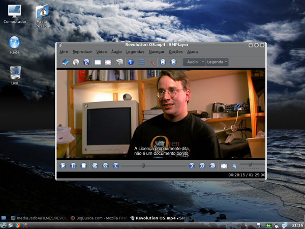
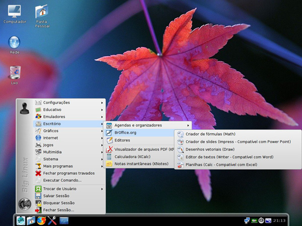

Big Linux(){
Software Livre
Big Linux é uma distribuição Linux 100% brasileira, desenvolvida por Bruno Gonçalves Araújo e que possui o idioma Português-br como padrão. A última versão (versão 4.2) foi lançada em novembro de 2008 e a nova versão, 5.0, já está saindo do forno, estando atualmente na versão "beta 2".
Essa distribuição já vem com ambiente 3D pré-configurado na versão 4.2 utilizando o KDE como ambiente gráfico. Big Linux é baseado nas distruibuições Kurumim, Ubuntu, Knopix e Kanotix e, além disso, utiliza os repositórios do Ubuntu para atualização. Caso não se queira instalá-la no disco rígido ou se tenha vontade de apenas testá-la, pode-se fazer isso executando-a diretamente pelo CD, por meio do Live-CD.
Site oficial da distribuição: clique aquiPágina de download: clique aqui
Fórum oficial: clique aqui


Referências:
Fórum Big Linux
Dicas para Computador
}